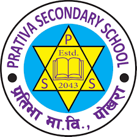

Education

2021 – 2023
High School Degree
Completed +2 Science in Biology in Pokhara, Nepal. Built strong academic foundation and discipline.
2024 – Present
Diploma in Computer Programming
Studying programming, databases, and cloud computing at Georgian@ILAC, Toronto. Actively building tech skills.
Experience
May 2025 – Present
Volunteer IT Administrator
Maintaining WordPress, managing Microsoft Teams structure, and supporting internal IT processes at Uzima.
May 2025 – Sep 2025
IT Systems Support Intern
Troubleshot hardware/software issues, managed updates, and helped configure accounts and networks.